Porto is having a moment. While Lisbon gets the headlines, Porto quietly became Europe's most exciting wine city — a place where you can taste a 40-year tawny in a centuries-old cellar, then walk across the bridge for a glass of natural Douro red at a fraction of what you'd pay in Paris or London.
We combed through hundreds of Reddit posts to find which wine bars and cellars actual visitors, expats, and Portuguese locals recommend — and which tourist traps to skip. Portugal's wine scene is absurdly underpriced and underrated. Let's fix that.
📊 How we built this list
We analyzed 120+ Reddit posts and 500+ comments across r/porto, r/portugal, r/wine, and r/travel — spanning 2022 to 2025. Wine bars were ranked by recommendation frequency and weighted by commenter credibility (long-term residents and repeat visitors vs. first-timers).
💰 €15–€35 tastings
📍 Vila Nova de Gaia, hilltop
🕐 10:00 AM–6:00 PM
📌 Google Maps →

What to taste: The terrace with panoramic Douro views is Porto's best. Book the premium tasting (€25) for vintage tawnies — the 20-year is outstanding. The restaurant Vinum downstairs has excellent food paired with their ports. Arrive early or book ahead; the terrace fills fast at sunset.
"Graham's has the best terrace view in all of Porto. Period. And the 20-year tawny was life-changing. Book the premium tasting, not the basic one."
— r/porto · 42 upvotes
"We did 4 port cellars and Graham's was the clear winner. The views, the quality of the tasting, and the staff were all a level above."
— r/travel · 31 upvotes
tabiji verdict: The best overall port cellar experience in Porto. The terrace alone justifies the trip to Gaia. Book the premium tasting and time it for sunset. If you only do one cellar, make it this one.
💰 €4–€12/glass
📍 Rua Ferreira Borges, Ribeira
🕐 12:00 PM–12:00 AM
📌 Google Maps →
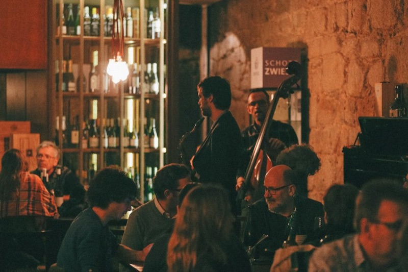
What to taste: The best wine bar in Porto proper. Incredible selection of Portuguese wines by the glass — Douro reds, Dão whites, and yes, port too. The staff are genuinely knowledgeable and will guide you. The cheese and charcuterie boards are excellent. Cozy atmosphere, no pretension.
"Prova is the single best wine bar in Porto. Amazing selection, the owner will guide you through Portuguese wines you've never heard of, and the prices are absurd for the quality."
— r/wine · 28 upvotes
"Skip the Gaia cellars for port and just go to Prova. They have incredible port by the glass and you get actual education about what you're drinking."
— r/porto · 19 upvotes
tabiji verdict: The wine bar locals actually go to. If the Gaia cellars are the "must-do tourist experience," Prova is where you graduate to. Superb staff, ridiculous value, and a proper education in Portuguese wine.
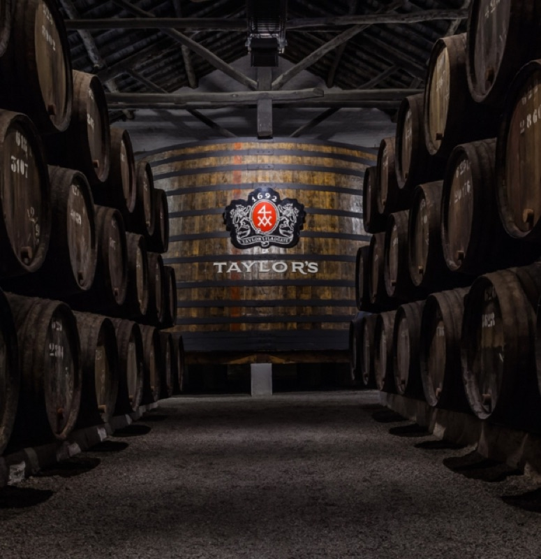
What to taste: The self-guided audioguide tour is slick and informative. The premium tasting room lets you try vintage ports including their legendary Vintage Collection. The Barão Fladgate restaurant on the terrace is excellent but pricey. Taylor's also has a more modern, curated feel than the other cellars.
"Taylor's was our favorite cellar experience. More polished than the others, the audioguide was genuinely interesting, and the vintage port tasting was worth every cent."
— r/portugal · 35 upvotes
tabiji verdict: The most polished cellar experience. If you're serious about port wine, Taylor's premium tasting is the one to book. The vintage ports here are exceptional. Pair with Graham's for the view — together they're the perfect Gaia afternoon.
💰 €10–€25 tastings
📍 Vila Nova de Gaia, waterfront
🕐 10:00 AM–6:00 PM
📌 Google Maps →
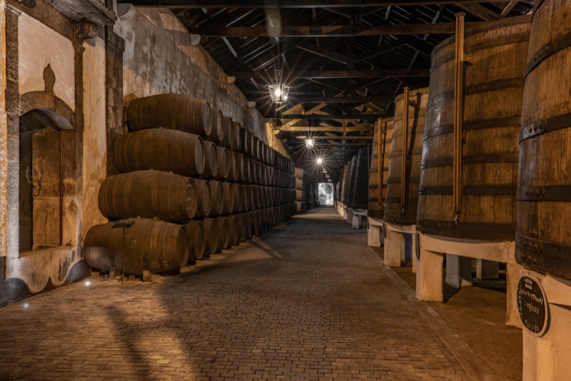
What to taste: The only major cellar that's still Portuguese-owned (founded 1751). The guided tour gives real historical depth, and the tasting includes their excellent Dona Antónia Reserva line. Less polished than Taylor's or Graham's, but more authentic and personal. Great value tastings.
"Ferreira felt the most 'real' of all the cellars we visited. Still family-owned, the guide was passionate, and the port was excellent. Better value than Graham's too."
— r/porto · 24 upvotes
tabiji verdict: The authenticity pick. If you want to support a Portuguese-owned cellar and get a more personal experience, Ferreira is your spot. The Dona Antónia tawny ports are seriously underrated.
💰 €5–€15/glass
📍 Rua de São João, Ribeira
🕐 2:00 PM–12:00 AM
📌 Google Maps →
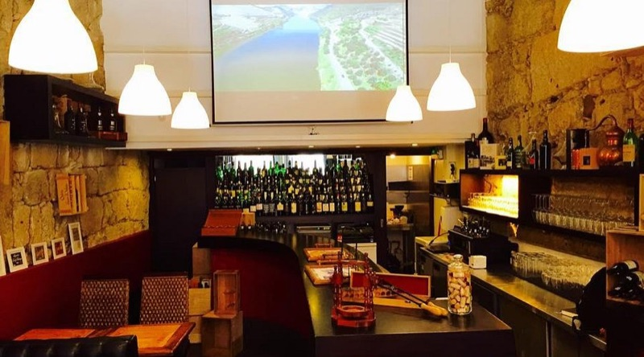
What to taste: Specializes in port flights — you can do side-by-side comparisons of tawny vs. ruby vs. white port. The blind tasting experience is fun and educational. Great cheese pairings. More intimate and less rushed than the Gaia cellars.
"Vinologia's blind tasting was the most fun we had in Porto. Guessing ports by style, age, and house — way more engaging than a standard cellar tour."
— r/wine · 16 upvotes
tabiji verdict: The best place to actually learn about port without the cellar tour format. The blind tasting experience is brilliant. Perfect for a rainy afternoon — cozy, intimate, educational.
💰 €5–€20 tastings
📍 Vila Nova de Gaia, waterfront
🕐 10:00 AM–7:00 PM
📌 Google Maps →
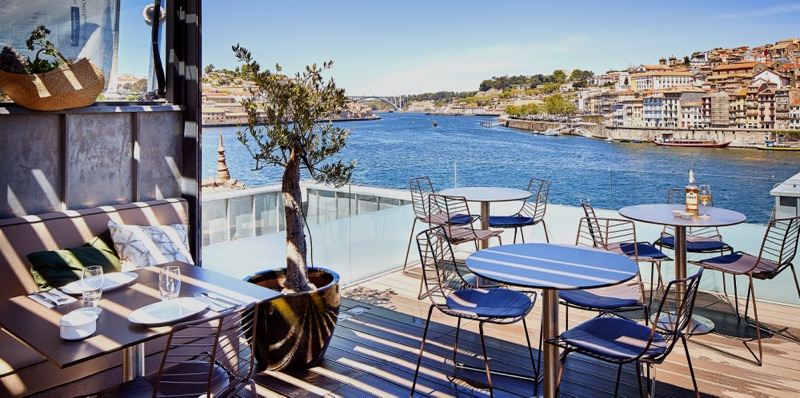
What to taste: A modern multi-floor experience — wine shop, tasting bar, restaurant, and a rooftop terrace with Douro views. Less focused on tours, more on casual tasting. The rooftop is a great sunset spot if Graham's terrace is full. The chocolate + port pairing is popular.
"Porto Cruz rooftop was our sunset backup when Graham's was fully booked and honestly it was just as good. Plus the chocolate-port pairing was a nice touch."
— r/porto · 12 upvotes
tabiji verdict: The casual alternative to a formal cellar tour. Walk in, taste at your own pace, enjoy the rooftop. Great for people who want port without the tour group experience.
💰 €3–€8/glass
📍 Muro dos Bacalhoeiros, Ribeira
🕐 12:00 PM–11:00 PM
📌 Google Maps →
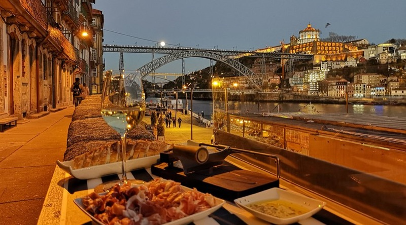
What to taste: Tiny wine bar right on the Ribeira waterfront. Insane value — €3–€5 glasses of excellent Portuguese wine. The owner is incredibly friendly and will pour you tastes of things you haven't tried. Gets busy, so go early evening. Perfect pre-dinner spot.
"Wine Quay Bar is a MUST. €3 for a glass of incredible Douro red, the owner is lovely, and you're right on the waterfront. We went back three times."
— r/porto · 37 upvotes
"Best value wine bar in Porto, hands down. You'll drink better wine here for €4 than you would for €15 in Lisbon."
— r/portugal · 22 upvotes
tabiji verdict: The best value wine bar in Porto. If you want to drink excellent Portuguese wine without spending cellar-tour money, this is your spot. Go early — it's tiny and word has gotten out.
💰 €10–€25 tastings
📍 Vila Nova de Gaia, waterfront
🕐 10:00 AM–6:30 PM
📌 Google Maps →
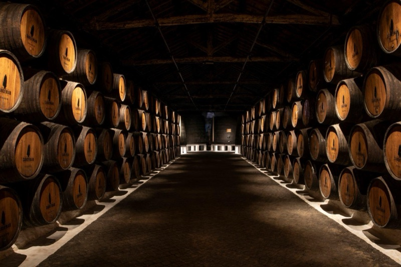
What to taste: The iconic "Don" silhouette brand. The guided tours are theatrical and entertaining — guides wear the signature black cape. More touristy than Graham's or Taylor's, but the showmanship makes it fun. Good introduction to port if you're a beginner. The premium tasting is worth the upgrade.
"Sandeman is touristy but the guides in capes are entertaining and the port is solid. Good for beginners. For serious wine people, do Taylor's or Graham's instead."
— r/travel · 18 upvotes
tabiji verdict: The "fun" cellar. If you want entertainment with your tasting, Sandeman delivers. Not the most serious port experience, but the most memorable for first-timers.
💰 €15–€50/glass
📍 Vila Nova de Gaia, hilltop
🕐 12:00 PM–11:00 PM
📌 Google Maps →
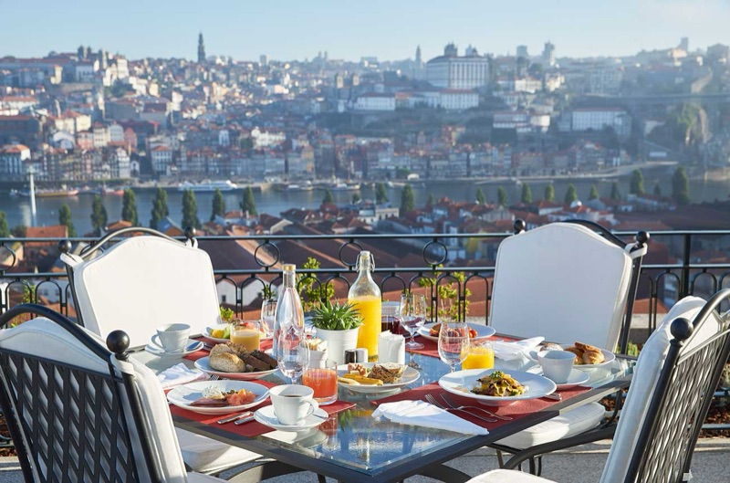
What to taste: A 5-star hotel with one of Porto's most impressive wine collections. The bar area is open to non-guests and the terrace views are staggering. Sommelier service is impeccable. The wine list features rare Portuguese wines you won't find anywhere else. Worth the splurge for a special occasion.
"The Yeatman bar is worth visiting even if you're not staying there. The wine list is insane and the view might be the best in Porto. Yes, it's expensive. Yes, it's worth it."
— r/wine · 21 upvotes
tabiji verdict: The splurge pick. When you want the finest Portuguese wines served with impeccable views and service. Non-guests welcome at the bar — just show up looking presentable. The sunset from the terrace is unreal.
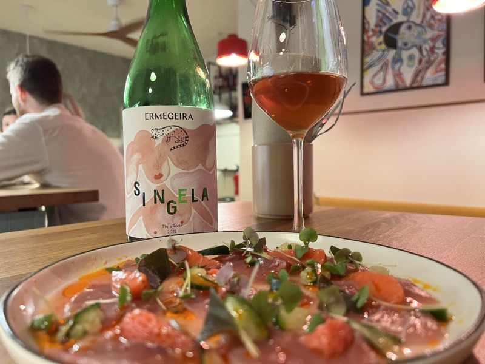
What to taste: Natural wine focus — a rarity in port-obsessed Porto. Rotating selection of Portuguese natural wines plus some international bottles. The vibe is young, hip, and casual. Good small plates. This is where Porto's wine nerds hang out when they're not talking about tawny.
"If you're into natural wine, Genuíno is your spot. Not the typical Porto wine bar at all — more like what you'd find in Paris or Barcelona but with Portuguese wines."
— r/wine · 14 upvotes
tabiji verdict: The natural wine pick for people who've had enough port. Porto's young wine scene is thriving and Genuíno is its unofficial headquarters. Great for a late-night glass after the cellars close.
💰 €3–€8/glass
📍 Rua da Conceição, Cedofeita
🕐 4:00 PM–12:00 AM
📌 Google Maps →
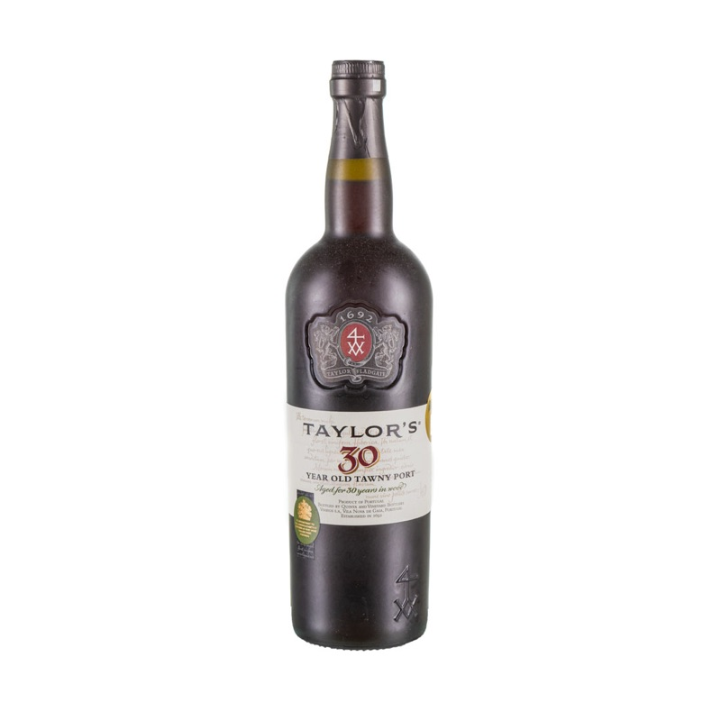
What to taste: Wine warehouse turned bar — huge selection at warehouse prices. Self-service Enomatic machines let you try expensive wines by the taste (€1–€3). Great way to explore Portuguese wine regions without committing to full glasses. The cheese selection is excellent.
"The self-pour machines at Armazém do Vinho are genius. You can taste 20 different wines for the price of 3 glasses anywhere else. Best way to learn Portuguese wine."
— r/porto · 16 upvotes
tabiji verdict: The explorer's paradise. If you want to taste widely across Portuguese wine regions without commitment, the self-pour machines are genius. Perfect for learning what you actually like before buying bottles.
💰 €15–€30 (with fado show)
📍 Vila Nova de Gaia, waterfront
🕐 10:00 AM–7:00 PM
📌 Google Maps →
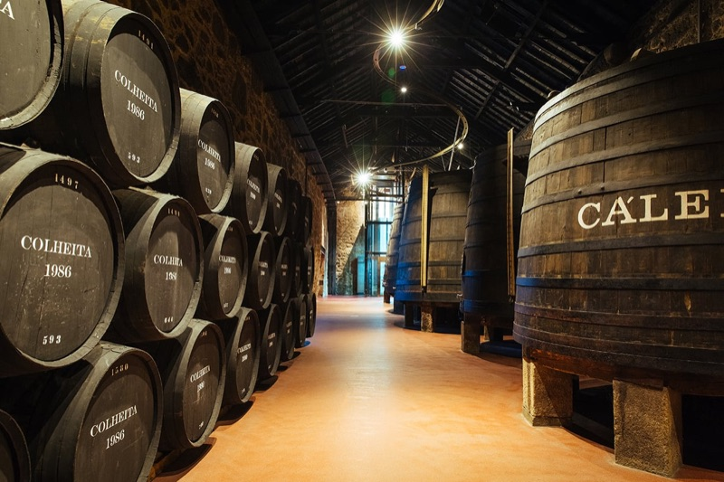
What to taste: Calém's unique draw is the fado + port pairing — live fado music in the cellar while you taste. It's touristy, but the combination of port wine and fado in an atmospheric cellar is genuinely memorable. The interactive museum area is well done. Book the fado package.
"Calém's fado and port tasting was honestly magical. Yes it's touristy but hearing fado in a port cellar while drinking tawny — that's a memory you keep."
— r/travel · 29 upvotes
tabiji verdict: Come for the fado, stay for the port. The cellar + live music combination is Porto at its most romantic. Book the evening fado session for the best atmosphere. Yes, it's aimed at tourists. Yes, it works.
💰 €3–€7/glass
📍 Rua da Conceição, Cedofeita
🕐 5:00 PM–2:00 AM
📌 Google Maps →
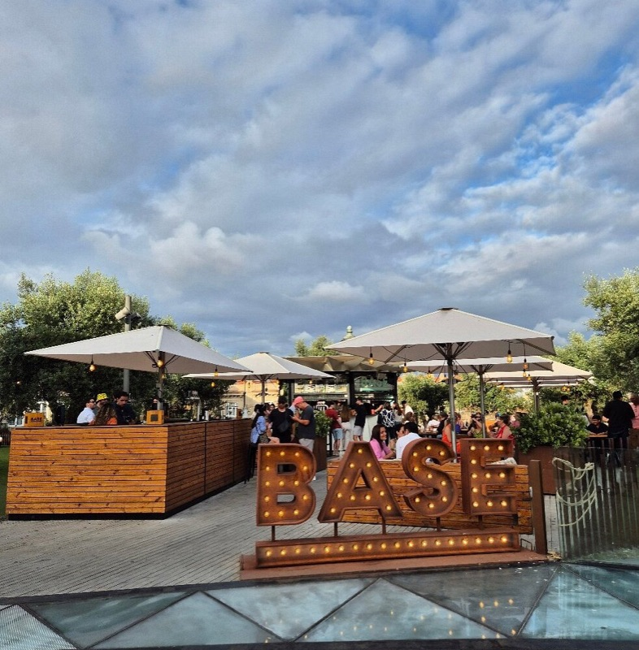
What to taste: Artsy wine bar in Porto's creative Cedofeita district. Cheap wine, good vibes, art on the walls, occasional live music. Not a serious wine destination — more of a place to drink good, cheap Portuguese wine in a cool atmosphere. Popular with students and creatives.
"Base is where Porto's cool kids drink. €3 wine, interesting art, and none of the tourist crowd. Perfect after-dinner spot in Cedofeita."
— r/porto · 11 upvotes
tabiji verdict: The vibe pick. Not about the wine list — about the atmosphere. Cedofeita is Porto's most interesting neighborhood and Base is its living room. Perfect for a cheap, late-night glass.
💰 €15–€40 tastings
📍 Vila Nova de Gaia, uphill from waterfront
🕐 10:00 AM–6:00 PM
📌 Google Maps →
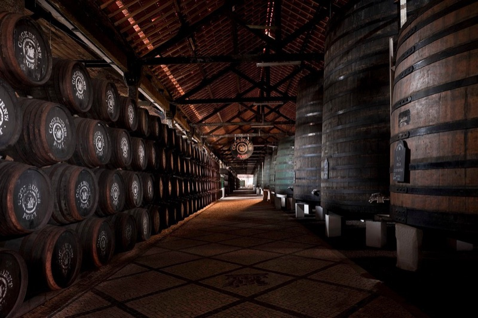
What to taste: Recently renovated into a sleek, modern tasting experience. Less known than Graham's or Taylor's, which means fewer crowds. Their Special Reserve is a Reddit favorite for the price. The tasting room has a more exclusive feel. Good for people who've already done the big-name cellars.
"Cockburn's was our second-visit cellar and we loved it. Less crowded, recently renovated, and their Special Reserve is criminally underrated."
— r/wine · 13 upvotes
tabiji verdict: The underrated cellar for return visitors. Modern, uncrowded, and their wines are excellent value. If you've done Graham's and Taylor's, Cockburn's is the natural next step.
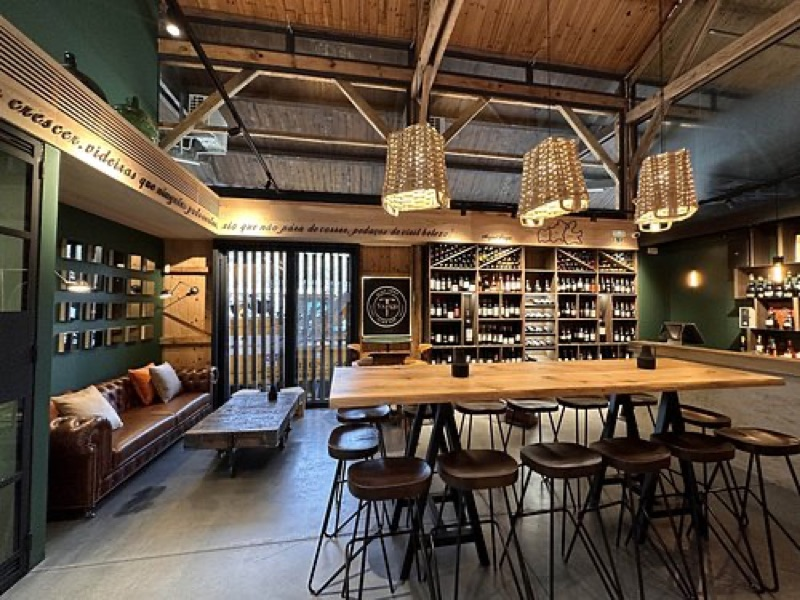
What to taste: Part wine shop, part tasting bar. The concept: try before you buy. Excellent curated selection focused on small Portuguese producers you won't find elsewhere. The staff can help you discover hidden gem wines and ship bottles home. Great for stocking up.
"Touriga is where we discovered our favorite Portuguese wine. The staff helped us find a small-production Douro red that we couldn't get anywhere else. Bought a case to ship home."
— r/wine · 15 upvotes
tabiji verdict: The place to discover and buy. If you want to bring Portuguese wine home, taste here first. The small-producer focus means you'll find wines that never make it to export markets. Staff are passionate and helpful.
Frequently Asked Questions
How much does a port wine tasting cost in Porto?
Basic tastings at Gaia cellars: €5–€15 for 3 wines. Premium tastings (vintage ports): €20–€50. Wine bars in town: €3–€8/glass for Portuguese wine, €5–€15 for port by the glass. Porto remains remarkably affordable for wine.
Which port cellar is the best for a tasting?
Graham's for the terrace and views, Taylor's for the premium tasting experience, Ferreira for authentic Portuguese-owned heritage. Morning tastings are less crowded — avoid 2–4 PM when tour buses arrive.
Should I drink port or regular wine in Porto?
Both! Do cellar tastings during the day for port, then hit wine bars in the evening for Douro reds, Vinho Verde, and Alentejo wines. Portugal's non-port wines are seriously underrated and absurdly good value.
Is Vila Nova de Gaia worth visiting?
Absolutely — it's where all major port cellars are located, across the Douro from Ribeira. Walk across the Dom Luís I Bridge, do 2–3 tastings, and watch the sunset from the river. Plan a full afternoon.